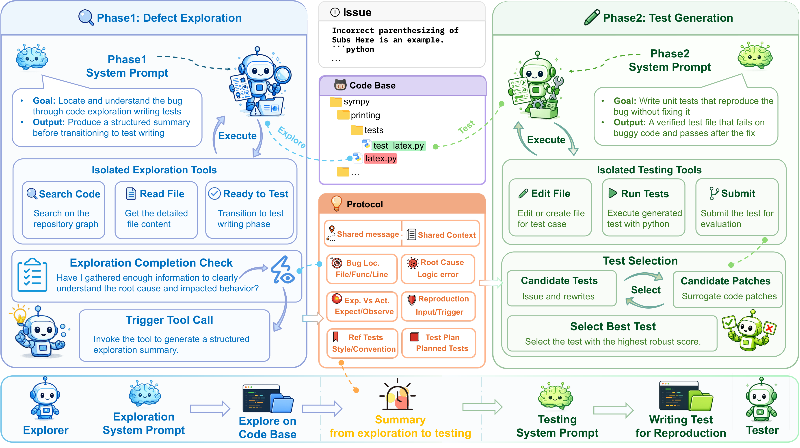
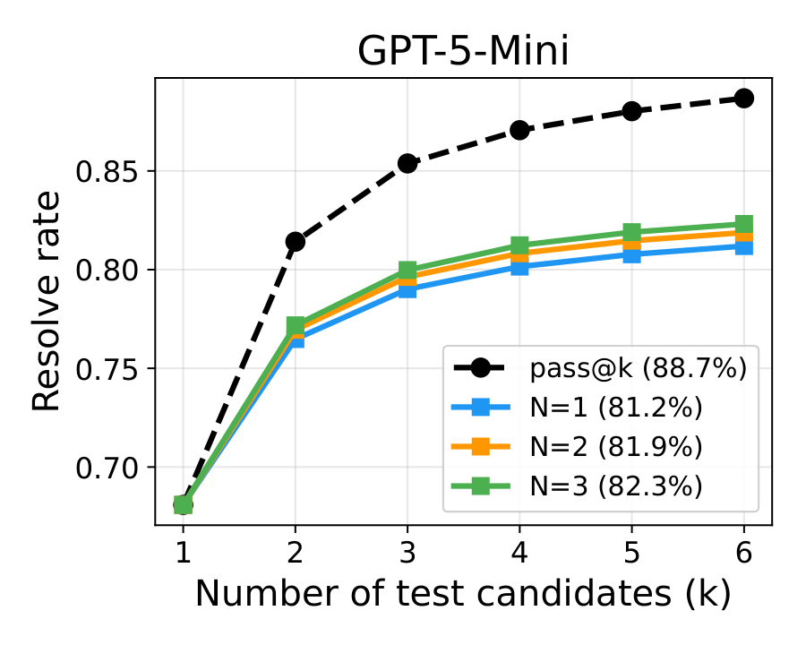
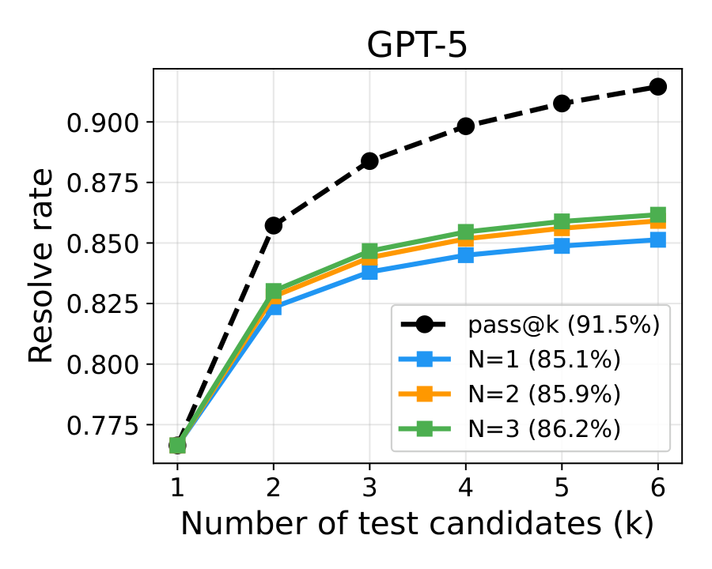
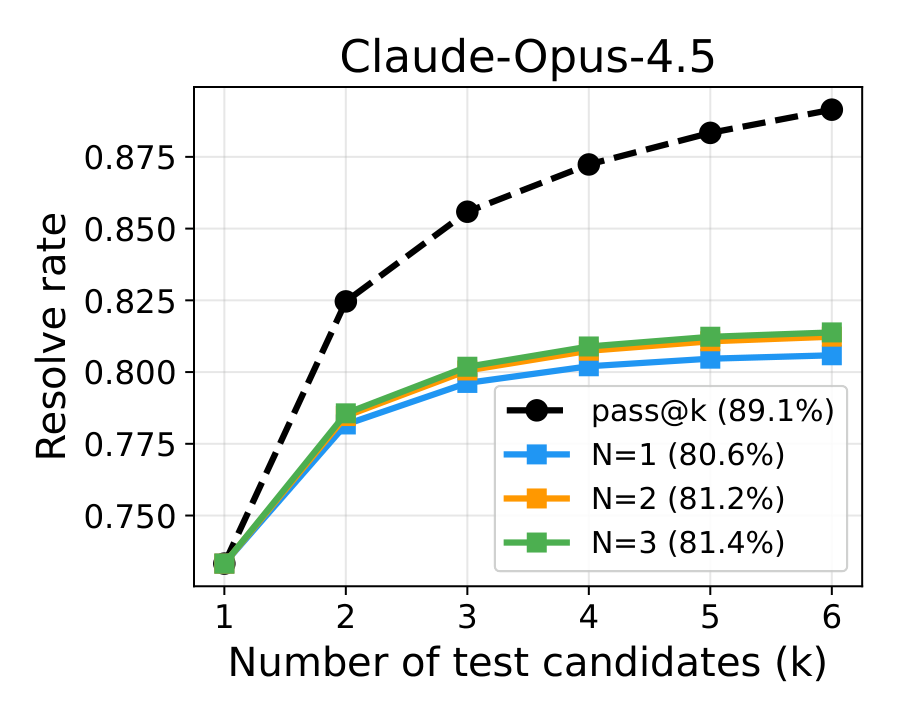
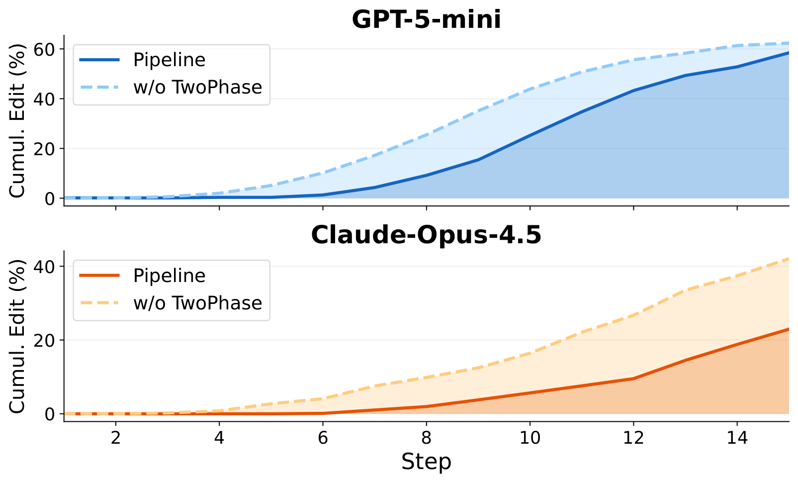

Abstract
Reproduction test generation, producing a failing-then-passing test that captures a reported bug, is a critical step in automated software engineering. Existing agentic methods treat this as a monolithic loop, despite the task inherently comprising two subtasks of distinct nature: diagnosing the root cause and writing a fail-to-pass test. Without explicit separation, the agent faces a compound objective with underspecified intermediate goals, leading to goal drift. We propose DPIAgent, a structured agentic framework built on three principles, Divide, Protocol, Isolate (DPI), that mitigates compound-objective ambiguity and goal drift: it Divides the task into single-objective phases of defect exploration and test generation; enforces a handoff Protocol that records the diagnosis and test plan, preventing context loss; and Isolates each phase's action space by tailoring the toolset to its task, preventing irrelevant tools from misleading execution. On SWT-Bench Verified, DPIAgent outperforms seven baselines across three backbone LLMs. With DPI alone it reaches 81.76% success rate on GPT-5, the highest reported among open-source methods, gaining up to 11.88 points over the strongest baseline on GPT-5-Mini; adding test selection further raises it to 86.17%. Our analysis shows that architectural structure and backbone capability are complementary axes rather than substitutes, demonstrating DPI's generalizability across model classes.
Framework
DPIAgent turns reproduction test generation into a two-stage executable workflow: first explore the defect, then write a targeted fail-to-pass test from the handoff.

Exploration Phase
The agent localizes the defect and collects evidence before any test edit is made.
Structured Handoff
The phase boundary records diagnosis, trigger condition, call path, oracle, and test plan.
Test Generation Phase
The agent writes the reproduction test under an edit-oriented toolset and validates the fail-to-pass signal.
Results
DPI improves both reproduction success and test quality. The gain is largest on weaker backbones, where structured decomposition compensates for limited self-correction.
DPIAgent consistently improves success rate and TDD coverage over SWE-Agent across three backbones.
| Model | Method | S ↑ | ΔC ↑ | Cov. ↑ | TDD ↑ |
|---|---|---|---|---|---|
| GPT-4o | LIBRO† | 17.80 | 38.00 | -- | -- |
| AssertFlip† | 45.50 | 47.40 | -- | -- | |
| Otter† | 31.60 | 37.60 | 74.59 | 25.78 | |
| Otter++† | 37.40 | 42.80 | 79.47 | 34.04 | |
| Claude-Sonnet-3.7 | e-Otter++† | 62.10 | 62.30 | 85.73 | 56.80 |
| v20250405-dev | Amazon Q† | 51.00 | 57.40 | 70.04 | 42.72 |
| Gemini-2.5-Pro | Echo† | 66.30 | 68.50 | -- | -- |
| GPT-5-Mini | TraeAgent | 60.74 | 55.95 | 64.75 | 47.23 |
| Mini-SWE-Agent | 38.80 | 41.54 | 53.11 | 35.02 | |
| OpenHands† | 62.40 | 60.60 | 69.92 | 42.13 | |
| Claude Code | 55.65 | 53.11 | 67.62 | 45.69 | |
| Aider | 40.42 | 41.33 | 47.62 | 30.62 | |
| Terminus-2 | 42.73 | 50.39 | 60.21 | 35.04 | |
| SWE-Agent | 60.12 | 64.78 | 80.12 | 54.29 | |
| Ours | 74.28 | 65.51 | 75.97 | 62.22 | |
| GPT-5 | TraeAgent | 69.98 | 61.77 | 75.80 | 60.59 |
| Mini-SWE-Agent | 54.27 | 44.80 | 54.69 | 41.94 | |
| OpenHands† | 79.80 | 66.30 | 68.85 | 45.79 | |
| Claude Code | 72.51 | 64.63 | 78.50 | 59.94 | |
| Aider | 34.87 | 39.33 | 46.84 | 26.59 | |
| Terminus-2 | 44.11 | 48.14 | 58.46 | 34.23 | |
| SWE-Agent | 72.52 | 69.26 | 84.47 | 56.30 | |
| Ours | 81.76 | 70.95 | 84.92 | 68.02 | |
| Claude-Opus-4.5 | TraeAgent | 77.60 | 60.25 | 72.22 | 59.75 |
| Mini-SWE-Agent | 76.67 | 67.91 | 82.37 | 66.85 | |
| OpenHands | 73.90 | 57.17 | 71.69 | 55.34 | |
| Claude Code | 73.21 | 59.48 | 70.70 | 55.35 | |
| Aider | 48.26 | 51.29 | 59.59 | 35.97 | |
| Terminus-2 | 68.13 | 54.22 | 59.57 | 41.99 | |
| SWE-Agent | 76.91 | 71.62 | 86.64 | 69.77 | |
| Ours | 78.98 | 71.74 | 89.52 | 73.77 |
† Results reported from the public leaderboard.
Test Selection
We rank candidate tests using surrogate code patches. The selection curves compare ranked resolve rate with the pass@k oracle upper bound as the number of test candidates increases.

GPT-5-Mini

GPT-5

Claude-Opus-4.5
Analysis
We analyze DPI from three angles: first-edit readiness before execution feedback, component ablations, and attribution against individual tool or prompt additions.
We remove the structured handoff summary, expose all tools across phases, and collapse the two-stage design into a single reactive loop to isolate Protocol, Isolate, and Divide.
| Metric | GPT-5-Mini | Claude-Opus-4.5 | ||||||
|---|---|---|---|---|---|---|---|---|
| Full | w/o Prot. | w/o Isol. | w/o Divd. | Full | w/o Prot. | w/o Isol. | w/o Divd. | |
| S ↑ | 74.28 | 70.90 | 72.70 | 67.66 | 78.98 | 75.51 | 76.21 | 69.05 |
| ΔC ↑ | 65.51 | 63.71 | 59.40 | 54.59 | 71.74 | 65.98 | 64.03 | 61.03 |
| Cov. ↑ | 75.97 | 72.88 | 67.80 | 64.28 | 89.52 | 79.27 | 79.50 | 75.96 |
To disentangle architectural structure from implementation differences, we add individual mechanisms from DPI to the monolithic SWE-Agent baseline on GPT-5-Mini. The edit-tool trace shows that without the two-phase design, the agent begins invoking edit tools from the first steps, interleaving test writing with repository exploration.
Adding Search Code improves success rate but lowers TDD coverage, while a one-shot summary prompt or standalone transition tool does not reproduce DPI's gain. Applying the DPI phase structure with standard SWE-Agent tools achieves the largest improvement, showing that the executable phase boundary is the primary source of the gain.

Edit tool usage rate across steps for Pipeline and w/o Divide variant.
| Type | Config. | S ↑ | TDD ↑ | ΔS | ΔTDD |
|---|---|---|---|---|---|
| Baseline | SWE-Agent | 60.12 | 54.29 | -- | -- |
| Tool Contribution | + Search Code | 67.66 | 50.40 | +7.54 | -3.89 |
| Tool Contribution | + Summary Prompt | 54.96 | 42.44 | -5.16 | -11.85 |
| Tool Contribution | + Transition Tool | 61.20 | 48.68 | +1.08 | -5.61 |
| DPI Contribution | + DPI | 72.97 | 56.41 | +12.85 | +2.12 |
To characterize what phase structure contributes before execution feedback, we evaluate each trajectory's first test edit with an LLM-as-Judge. The judge scores two dimensions: Target Alignment, whether the test targets the correct code location, and Specification Completeness, whether the test captures the trigger condition, critical input, call path, oracle, and discriminative behavior. We mark a first edit as Ready only when both dimensions receive the maximum score. We instantiate the judge with GPT-5.6-Terra, run it three times independently, apply outcome-aware correction by marking an edit Ready if it already achieves F2P without post-first-edit modification, and report mean case counts.
DPI primarily improves pre-feedback test design quality, and this improvement is most critical for weaker models. DPI consistently lifts Ready counts across all three backbones; since Ready cases convert to F2P at over 90% across all configurations, increasing Ready directly expands the solved set. Weaker models benefit more because they rarely recover from Not-Ready first edits, whereas stronger models can self-correct more often, so DPI's new Ready cases overlap with cases they could already solve.
| Model | Config | Target | Spec | Ready | Ready F2P | Total F2P |
|---|---|---|---|---|---|---|
| GPT-5-Mini | SWE-Agent | 319.7±0.6 | 269.7±1.2 | 269.7±1.2 | 243.7±1.5 | 273.7±1.5 |
| DPI | 370.0±1.7 | 332.7±4.2 | 332.7±4.2 | 311.0±2.0 | 331.0±2.0 | |
| Δ | +50.7±1.2 | +63.0±3.5 | +63.0±3.5 | +67.3±1.5 | +57.7±1.2 | |
| GPT-5 | SWE-Agent | 369.3±1.5 | 310.0±4.0 | 310.0±4.0 | 284.7±3.5 | 316.7±2.5 |
| DPI | 405.0±1.7 | 377.7±1.5 | 377.7±1.5 | 352.7±0.6 | 355.7±0.6 | |
| Δ | +35.3±1.2 | +67.7±4.7 | +67.7±4.7 | +68.0±3.6 | +38.7±2.9 | |
| Claude-Opus-4.5 | SWE-Agent | 365.0±0.0 | 294.7±0.6 | 294.7±0.6 | 269.7±1.5 | 332.7±0.6 |
| DPI | 392.3±0.6 | 365.0±2.6 | 365.0±2.6 | 338.3±1.2 | 344.3±1.2 | |
| Δ | +27.3±0.6 | +70.3±2.1 | +70.3±2.1 | +68.7±0.6 | +11.7±1.5 |
BibTeX
@misc{liu2026dpiagent,
title = {DPIAgent: Divide, Protocol, Isolate for Agentic Reproduction Test Generation},
author = {Liu, Hao and Liu, Steven and Zhang, Xin and Luo, Jane and Kang, Yu and Wu, Jie and Yang, Fangkai and Huang, Yangyu and Gao, Pengfei and Li, Scarlett and Lu, Yan},
year = {2026}
}